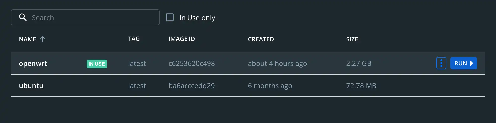
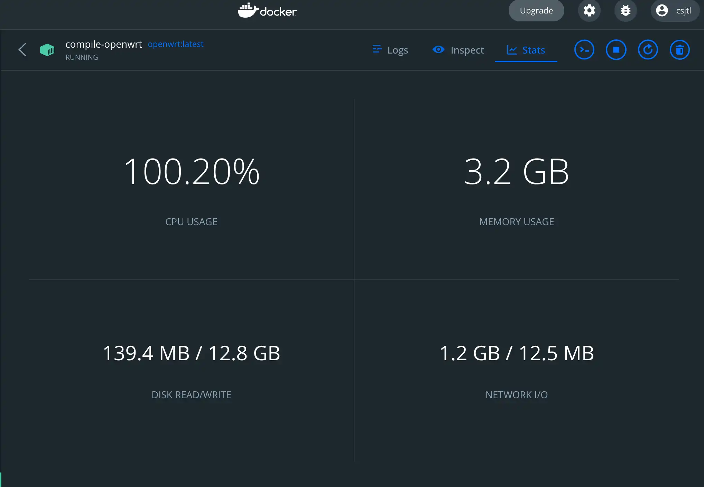
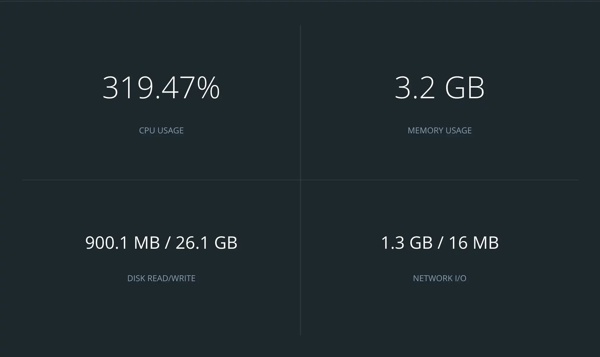
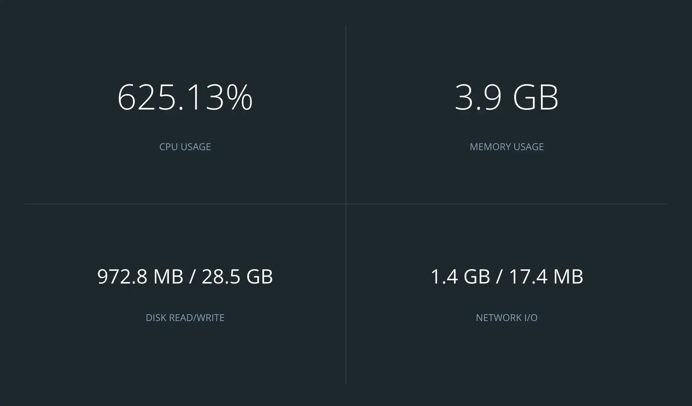

openwrt-docker-ubuntu
Docker 使用的 Ubuntu 22.04 的编译 OpenWrt 的编译环境容器。 拉取命令 docker pull csjtl/openwrt-compile-env-for-docker:v1.01 。最终镜像为最新的 Ubuntu 22.04 的系统，完整的 OpenWrt 编译依赖环境。SSH 自启动，启动容器即可链接。添加一个名为 csjtl 的用户，赋予sudo权限，用于非root编译 openwrt 。Vim 使用了自定义主题 molokai.vim 和 vimrc 配置文件。
Dockerfile 文件
新建文件名Dockerfile，使用如下代码，用来定制编译 OpenWRT 的 Docker 镜像。用户名和密码可自定义。
1 | FROM ubuntu:latest |
10行：csjtl 可以自定义其它用户名
11行：csjtl:1 是用户名csjtl 和密码 1
14行：用户名csjtl ，用来使用 sudo 权限
Build 镜像
- 安装 Docker Desktop
- 在 Dockerfile 文件的当前位置执行
docker build -t openwrt:latest .openwrt是文件名，任意.是 Dockerfile文件在当前位置。 - 打开客户端，左侧
Images 官方镜像只有72多M。定制后的镜像2.27G。点击`run` - 共享一下文件夹路径
Container Name 容器的名字任意。
Host Path 宿主机 Mac 的文件共享路径。
Container Path 容器（ Ubuntu )的文件共享路径。 - 打开终端
docker exec -it demo /bin/bash进入容器。执行su csjtl切换成普通用户，git openwrt源码调整编译就行了。
Docker 常用命令
导入
- images
导入（openwrt-compiler-env-for-docker.tar）
docker load --input openwrt-compiler-env-for-docker.tar - 容器
导入容器文件名（compile-openwrt.tar）为（compile-openwrt:v1.00）
cat compile-openwrt.tar | docker import - compile-openwrt:v1.00
导出
images
导出（openwrt:latest）为（openwrt-compiler-env-for-docker.tar）
docker save -o ./openwrt-compiler-env-for-docker.tar openwrt:latest容器
导出容器名字或ID（compile-openwrt）为 （compile-openwrt.tar）
docker export compile-openwrt > compile-openwrt.tar
修改
名字和 tag 标签（openwrt:latest）为（openwrt-compiler-env-for-docker:v1.00）
docker tag openwrt:latest openwrt-compiler-env-for-docker:v1.00
容器导出为镜像
容器名（compile-openwrt）转为镜像名（csjtl/compile-openwrt:v1.00）
docker commit compile-openwrt:latest csjtl/compile-openwrt:v1.00
删除
- images
删除某个images
docker rmi <IMAGES ID>
删除所有的images
docker rmi $(docker images -q) - 容器
删除没有运行的容器docker rm <CONTAINER ID>
删除运行中的容器
docker rm -f <CONTAINER ID>
删除所有的容器
docker rm $(docker ps -q -a)
推送到 images 到 hub
文件名需要包含 (用户名/文件名:tag) 否则推送拒绝，只有 docker 官方的没有用户名
docker push csjtl/openwrt-compiler-env-for-docker:v1.00
新容器共享文件夹
win系统：运行csjtl/compile-openwrt:latest 共享c盘的文档在容器/mnt/win路径 开放（宿主机:容器）22端口
docker run -v c:/Users/tl851/Documents:/mnt/win -p 22:22 --name compile-openwrt-v1.01 -it csjtl/openwrt-compile-env-for-docker:v1.01 //bin/bash
运行已经存在的容器
容器运行（compile-openwrt）
docker container start compile-openwrt
题外话
编译的 ARM 的系统状态变化
